Do you ever wonder how special effects using fluids like water are animated for movies? In this tutorial, we'll show you how to simulate fluids using the popular Fluid-Implicit-Particle / Particle-in-Cell (FLIP/PIC) method.
This tutorial is designed assuming a year or two of experience in or exposure to:
Some exposure to computer graphics helps but is certainly not required. If you're a second- or third-year computer science college student, you have more than enough background! If you haven't gone to college, haven't studied computer science, don't remember much math or physics, or this list just feels overwhelming in general, that's okay! Feel free to follow along and look up and/or skip lots of things! You don't have to understand everything, by any means, to gain something from this tutorial. Other than access to a computer (yes, this can be a challenge) and at least an occasional Internet connection, everything else this tutorial is freely available!
This tutorial will use the C++ programming language. We will use the Open Graphics Library (OpenGL) and the associated OpenGL Utility Toolkit (GLUT) to display graphics on the computer screen. This is freely available software widely used for displaying graphics on computer screens.
From this point onward, I'll assume you're using a computer running Ubuntu 16.04 or 18.04. I'll also assume your computer account has permission to install new software on that computer, or if not, that someone else can do it for you. If you're running another operating system, such as Windows or macOS, you should be able to follow along but with some small changes to commands and the code.
Open a Terminal (CTRL+ALT+T on Ubuntu). Type this command and press Enter:
g++ --version
You should see some text showing the version of g++, the program we'll use to compile our code, that is installed on your computer. If not, look up how to install it. For our purposes, which version of the compiler you install should matter much.
Next, in a Terminal (the same one as before is fine!), type this command and then press Enter to run it:
sudo apt install freeglut3-dev
If you're asked to, enter your password and press Enter. Once the computer finishes installing OpenGL and GLUT, figure out where it was installed. I found this out by typing something like ls /usr/lib/x86_64-linux-gnu/libgl* and pressing the [TAB] key twice, causing the Terminal to list a whole bunch of files with names starting with libglsomething including libglut.something. So, my OpenGL and GLUT libraries were installed in /usr/lib/x86_64-linux-gnu/. Feel free to search online for how to find where OpenGL and GLUT were installed on your computer if you're not sure.
This is not required but I highly recommend installing clang-format, a program used by many software developers in industry to format their code in a consistent style. We'll use this program to format our code in Google's style. To install it, run this command in a Terminal and press Enter:
sudo apt install clang-format-10
It's okay to use another version of this program; I just happen to be using version 10 at the moment.
Now, create a directory (folder) somewhere on your computer where you want to store all the code you write as part of this tutorial. You can and will make multiple subdirectories in there as the tutorial proceeds, but it's good to have one parent directory that holds everything. cd to that parent directory in a Terminal window. Then type this command and press Enter:
clang-format-10 -style=Google -dump-config > .clang-format
This creates a "hidden" file (meaning you can see it by running the ls -a command, but not the plain ls command) in this directory that contains your default settings consistent with the Google style for the clang-format program. Here is my .clang-format file. If for some reason you want to keep your code in multiple disparate places on your computer, you can just re-run this command in each of those directories.
OpenGL is a general framework that allows us to do graphics programming. To use it to display geometry effectively, we need to set up some initial working code and understand a bit about how OpenGL code manages what we see on the screen.
Our first program will be a single file containing code in the C++ programming language. When we run this program, if everything is working, a window will pop up on the computer screen displaying a single, red, boring sphere. It's so boring, in fact, that it won't even look three-dimensional: it'll just look like a filled-in red circle.
Make a directory called basic inside the directory that'll house all your code for this tutorial. Okay, you can put this directory anywhere, but this will just make it less work for you to run clang-format on your code and keep it organized the same way as this tutorial's code. In that directory, create a file called HelloSphere.cpp. You can copy the code from my HelloSphere.cpp file and save it. Or you can just download the file by clicking on this link and then clicking the "Raw" button on that page. I put a lot of comments in the file explaining what the code does. If you want to learn more details about how OpenGL and GLUT work, you can find plenty of documentation via online search.
In a Terminal, cd to the directory containing this HelloSphere.cpp file. Then run this command:
clang-format-10 -style=file -i HelloSphere.cpp
Congratulations! Your C++ code is now formatted according to Google's standards! Well, at least it's formatted to the standards a computer can follow automatically. Now, let's compile your code with this command:
g++ HelloSphere.cpp -o HelloSphere -L/usr/lib/x86_64-linux-gnu/ -lGL -lglut -lGLU
If it compiled with no errors or warnings, let's run the program! Run it with this command:
./HelloSphere
You should see a window pop up on your screen that looks something like this:
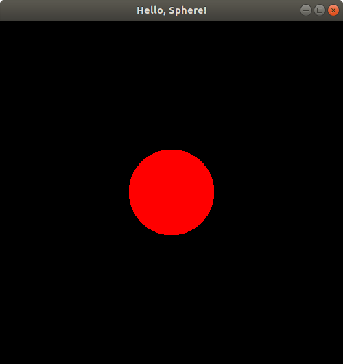
You can close the window to stop the program.
Here are a couple sources that I think illustrate nicely how to create simple OpenGL programs from scratch:
It's exciting to get our first program working. But the geometry I claimed was 3D just looks like a boring red disc (filled-in circle). How can we make it look 3D?
The 3D nature of shapes becomes more apparent when we add shading to our scene. In OpenGL, this is done by modeling the effects of light on the color of each vertex of any shape, assuming some material properties of the shape. By turning on a light, we can make our sphere "look" three-dimensional. In the same directory as the previous program (just for convenience, e.g., access to the same .clang-format file), create a new file called HelloSphereShaded.cpp. Here is my version, which you can copy or download: HelloSphereShaded.cpp.
Compile the program:
g++ HelloSphereShaded.cpp -o HelloSphereShaded -L/usr/lib/x86_64-linux-gnu/ -lGL -lglut -lGLU
Run it:
./HelloSphereShaded
View the result:
And there you have it! Now there's some shading, revealing the 3D shape of our sphere!
To clarify exactly how the 3D coordinates of our shapes map to the 2D locations of shapes we see on the computer screen, let's do some experiments.
Make a new program called PositionSphere.cpp in the same directory (for convenience, you could put it in another directory if you really want). Here's my code: PositionSphere.cpp.
Compile this program:
g++ PositionSphere.cpp -o PositionSphere -L/usr/lib/x86_64-linux-gnu/ -lGL -lglut -lGLU
Run it:
./PositionSphere
The window that pops up should look exactly the same as before! Now let's change the call to putSphereCenteredAt to putSphereCenteredAt(1.0, 0.0, 0.0); and then compile and run the program using the same commands as before. Here's the result:
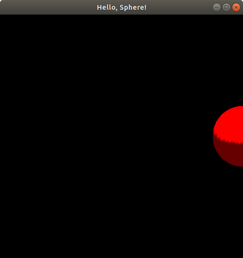
Hmm. It looks like the sphere is halfway out of our viewing window! Let's push the boundaries a bit further by changing that function call to putSphereCenteredAt(1.2, 0.0, 0.0);, compiling, and running again. Here's the result:
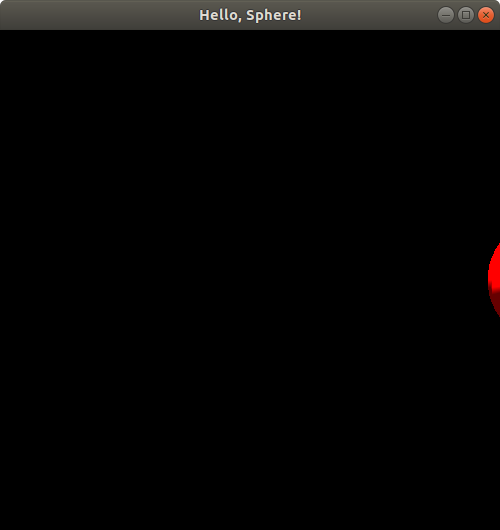
The sphere is almost gone--just a little sliver left! Now, you might notice from the code above that the radius of this sphere is 0.25. We have just moved the sphere to the right by 1.2. If the viewing window is showing us x-coordinate values ranging up to x = 1, and if the positive x-axis direction points to the right of our window, then we would expect the sphere to disappear completely when we shift it to the right (positive x direction) by 1.25 or more. Let's try putSphereCenteredAt(1.245, 0.0, 0.0);:
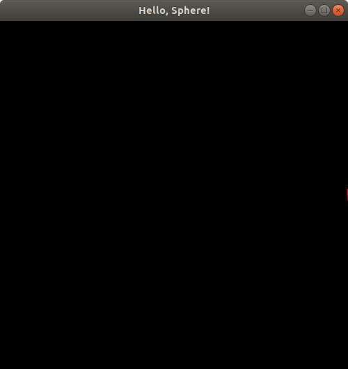
Sure enough, we only see a tiny sliver of the sphere remaining in our viewing window! If you're having trouble seeing it, it's just a few red pixels on the right middle end of the image above. Finally, let's try putSphereCenteredAt(1.25, 0.0, 0.0);. Sure enough, the resulting image, which I won't bother to show you here due to its extremely boring pitch black appearance, displays absolutely no part of the sphere. So, it seems like a reasonable guess, that perhaps our viewing window extends up to x = 1 on the right side.
Similar experiments will reveal that the left end of our viewing window extends to x = -1, the top end goes to y = 1, and the bottom goes to y = -1. To verify this yourself, try putting 1.245 or -1.245 into the x or y coordinates of the putSphereCenteredAt function call one at a time and observe where the little sliver of the sphere appears.
The z-coordinate is a bit odd in comparison. Let's try the same experiment, first with putSphereCenteredAt(0.0, 0.0, 0.75);:
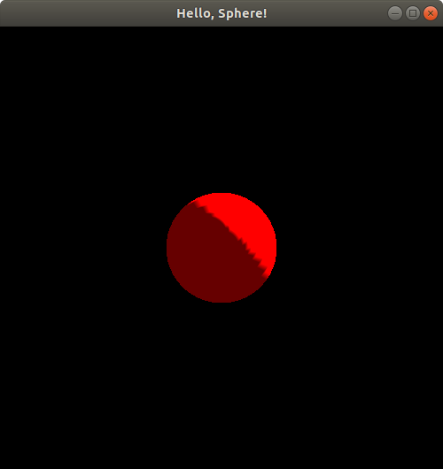
If you compare this image to the original one from the first time we ran this program with no translation, or equivalently, the picture we got when we ran HelloSphereShaded.cpp, you may notice that the spheres look exactly the same size; the only difference between them seems to be the lighting and shading. This may seem a bit strange since the z-axis is presumably oriented somehow toward/away from us, i.e., perpendicular to the computer screen (since the x- and y-axes are both parallel to the computer screen), yet, unlike real life, bringing the sphere closer to us doesn't seem to be changing its size!
Let's continue experimenting. Let's now move the sphere to putSphereCenteredAt(0.0, 0.0, 1.0);. If you run this, you'll notice a totally blank, black window again! What happened to the sphere? Why did it disappear? If z is clamped to [-1, 1] like x and y are, should we still see half of the sphere in our viewing window when we move it to be centered at z = 1?
Let's make one other change to the code, temporarily. Let's comment out these two lines in the drawBackground() function:
// glEnable(GL_CULL_FACE); // glCullFace(GL_BACK);
Then, try running the program:
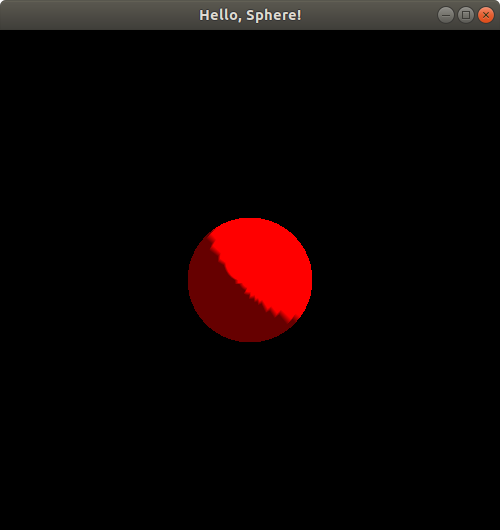
Now, we seem to see the sphere again--the lighting looks different than what we just saw earlier. Let's not analyze the lighting too much and let's keep moving the sphere further along the z-axis. Let's move it now to putSphereCenteredAt(0.0, 0.0, 1.24);:
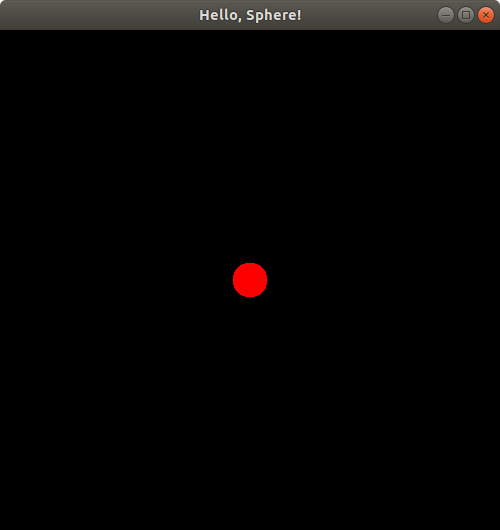
Hmm. Looks like the sphere is starting to disappear! Let's try putSphereCenteredAt(0.0, 0.0, 1.2499);:
Just a tiny dot of the sphere left in our viewing window! Change the z-coordinate to 1.25 to verify that the sphere does indeed completely disappear from the viewing window at that location. This suggests pretty strongly that the z-coordinate does indeed extend up to z = 1 on the positive side of the z-axis (since the sphere has radius 0.25, so if it's centered at z = 1.25, the points on its surface will have z values that go as low as 1.25 - 0.25 = 1, which we can't see, and if it's centered at z = 1.2499, its points will go as low as z = 1.2499 - 0.25 = 0.9999, of which we do see a tiny bit). But is the positive z direction pointing toward us, or away from us?
If you do the exact same experiments but with negative z values (and now you can uncomment those lines of code that mentioned something about culling), you'll notice the exact same pattern. When the sphere is centered at (0.0, 0.0, -1.0), it appears to have exactly the same size as it did at z = 0.75 and at z = 0, but with just a bit of a change in its lighting and shading:
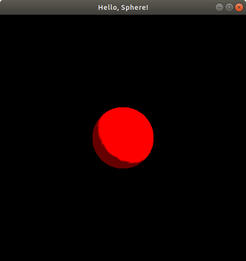
If you continue the experiment to move the sphere's center to (0.0, 0.0, -1.2499), you'll notice an identical image to when we put the sphere center at (0.0, 0.0, 1.2499), i.e., just a tiny dot in the middle of the screen is visible, and if you move the sphere center to (0.0, 0.0, -1.25), you'll see a totally blank black screen like you did when you moved the sphere center to (0.0, 0.0, 1.25). So, it appears that the negative z-coordinate also extends up to z = -1.
It still seems bizarre that with all this experimenting, we can't tell whether z increases toward us, or decreases toward us! But at least we did discover that we seem to be able to view any points that are within (-1, 1)3 ⊂ R3, i.e., a box where -1 < x, y, z < 1. This is called OpenGL's default viewing frustum. We also figured out that x increases to the right and y increases upward. Based on this, it might be a reasonable guess that z by the right-hand rule increases toward us. But how can we know for sure?
Instead of experimenting indefinitely, let's now get a more detailed understanding of exactly what OpenGL does to go from what appears to be 3D geometry, to a 2D image on our two-dimensional computer screen.
The glutSolidSphere function always generates a set of triangles that approximate the surface of a sphere that is centered at (0, 0, 0). To "move" a sphere to be centered at a location other than (0, 0, 0), we must adjust the coordinates of the vertices of the triangles approximating the sphere to be located in appropriate places such that the resulting sphere would be centered at the desired location. To handle this shifting, or translation, of the coordinates, our code calls the glTranslated function. But notice some other code around that function call: there is some pushing and popping of a matrix, and something called GL_MODELVIEW. What is all that?
OpenGL actually transforms the coordinates of any points it draws in the following way. Let (x, y, z) be an arbitrary point, e.g., a vertex on one of the triangles making up the sphere created by a call to glutSolidSphere. OpenGL represents each point in homogenous coordinates, so the point is represented with the coordinates p = (x, y, z, 1). These original coordinates for the point p are said to be in the object coordinate system or local coordinate system. The terms "local" and "object" here are referring to coordinate system whose origin is at the center of the sphere itself, regardless of where we're trying to center it. So, this is the coordinate system that is "local" to the "object," i.e., the sphere we want to draw. OpenGL represents this 4D point as a column vector (4x1 matrix) and then left-multiplies it by a 4x4 model matrix. The resulting 4x1 column vector represents the same point in the world coordinate system of OpenGL. This is the default, universal coordinate system OpenGL uses. All other coordinate systems are defined relative to this coordinate system. Note that this coordinate system isn't explicitly defined anywhere; a universal coordinate system just exists theoretically, and the only way for us to "see" it is to define at least one other coordinate system from which to view the universal/world coordinate system. Next, OpenGL left-multiplies that world-coordinate-system 4x1 column vector by a 4x4 view matrix. The resulting 4x1 column vector represents the point p's coordinates in what we call the view coordinate system. Next, OpenGL left-multiplies this 4x1 vector by yet another 4x4 matrix called the projection matrix, yielding a 4x1 vector of coordinates for the point p in the clip coordinate system. At this point, OpenGL "clips" or removes all points that lie outside of the viewing frustum. In this case, we're using OpenGL's default viewing frustum where the x, y, and z coordinates must lie within (-1, 1). After clipping, OpenGL normalizes the coordinates of all remaining points so that x, y, and z lie within (-1, 1). By default, the clip coordinates are already in that range as we just said, but OpenGL does allow you to change the clip coordinates to be in a different range. But when OpenGL normalizes the clip coordinates into the normalized device coordinate (NDC) system, the coordinates must all lie within (-1, 1) regardless of what range the clip coordinates cover. Finally, the NDC coordinates are transformed so that -1 < xndc < 1 covers 0 < xwindow < w, where w is the width of the viewing window specified in the code above, -1 < yndc < 1 covers 0 < ywindow < h, where h is the height of the viewing window, and -1 < zndc < 1 covers 0 < zwindow < 1. It is possible to change these ranges in OpenGL, but what we described here is the default behavior of OpenGL.
Let's denote the model matrix by Mmodel, the view matrix by Mview, and the projection matrix by Mproj. Then the clip coordinates, pclip, of the point p in object coordinates is pclip = Mproj · Mview · Mmodel · p. Let w = h = 500 pixels, as specified in our code above for the window size.
In our HelloShadedSphere.cpp and original PositionSphere.cpp programs, when we left the sphere centered at the origin of the world coordinate system, our model matrix, Mmodel, was the 4x4 identity matrix. Later when we started translating the sphere away from being centered at the origin, that translation amount, (tx, ty, tz) (e.g., once we did tx = ty = 0 and tz = 1.2499), was included in the model matrix. That is:
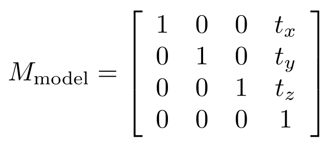
The view matrix is what represents the position and orientaton of the "camera" of OpenGL. By default, this is the identity matrix. This effectively makes us view all the objects in our OpenGL scene, by default, by having our camera eye located at (0, 0, +∞), while looking in the negative z direction. You'll see other sources saying the camera eye is effectively at the origin, (0, 0, 0), but the projection we describe below actually makes the concept of the eye being anywhere near the scene seem nonsensical. So, by default,
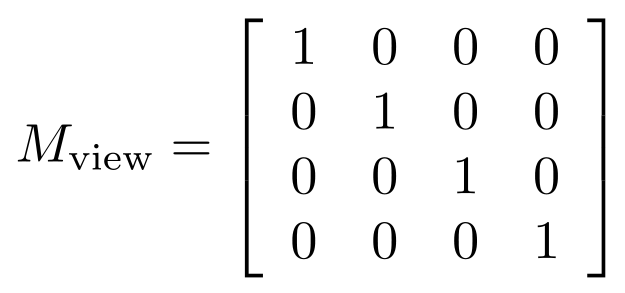,
but if you look at our code above, you'll notice that the model matrix and any view matrix are all combined into a single stack of matrices OpenGL calls the GL_MODELVIEW matrix mode. So, OpenGL actually combines, at any point in the code, model and view matrices into a single matrix that gets applied to all object-space vertex coordinates to obtain view coordinates. In our case,
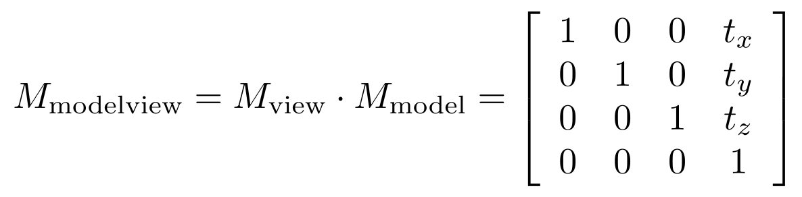.
By default, in OpenGL, Mproj is the 4x4 identity matrix, which represents what is called an orthographic projection: it's like having a camera located infinitely far away from the origin, which lacks any notion of perspective; everything looks just as close to us as everything else since everything is, basically, infinitely far away from us. It's kind of like how we can't tell which stars in the sky are closer or farther away from us just by looking at them, even though we can judge how close a basketball might be to us if it's 1 meter vs. 10 meters away. With the default orthographic projection in OpenGL, it's like everything is a star that's infinitely far away. OpenGL applies the projection matrix typically on another matrix stack called GL_PROJECTION, which is not mentioned in our code since we just used the default projection matrix. If we wanted to change the camera's behavior, we could do so explicitly on the GL_PROJECTION matrix stack in our code. So:
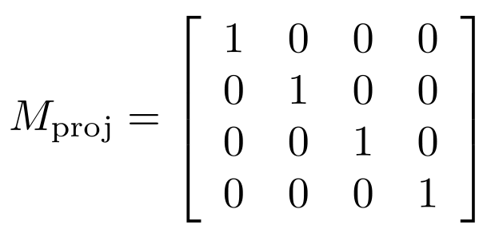
Combining all of this, we see that pclip = Mproj · Mview · Mmodel · p = (x + tx, y + ty, z + tz), i.e., the result of the projection and modelview matrices, together, is just to translate all object-space coordinates of all points by (tx, ty, tz). After applying all of these transformations, OpenGL will clip any points that are outside of the viewing frustum, like we saw earlier in all the examples where parts of the sphere were cut off from appearing in the viewing window.
Since our clip coordinates are already normalized by default, pclip also represents the normalized device coordinates (NDC) of all points: pndc = pclip. Finally, the NDC coordinates are transformed to window coordinates by scaling and shifting the NDC values to get the x-coordinates to be within 0 to w, the y-coordinates to be within 0 to h, and the z-coordinates to be within 0 to 1. This is accomplished by setting xwindow = (w/2)(xndc + 1) pixels, ywindow = (h/2)(yndc + 1) pixels, and zwindow = (1/2)(zndc + 1). You can verify that xndc = -1 gets mapped by this transformation to xwindow = 0 and xndc = 1 gets mapped to xwindow = w = 500, so this is how the 3D object coordinates end up getting mapped to 3D window coordinates.
Finally, what we see on our 2D screen is the result of taking the 3D window coordinates and doing a depth test, as we asked OpenGL to do with in our code with the function call glEnable(GL_DEPTH_TEST);. So, this is how OpenGL makes sure whatever we see on our 2D screen is whatever is closest to us in the 3D scene we defined, much like a real-life camera's 2D image displays what the camera can see in a 3D real-world scene.
All of these coordinate system shenanigans were to help us understand exactly what we see on the screen, and how what we see in pixels maps to the original 3D coordinates of the objects we constructed. This insight will come in handy as we start moving objects around on the screen during animations of physics-based simulations! Here is a diagram summarizing the overall default transformation from world coordinates to window coordinates in OpenGL:
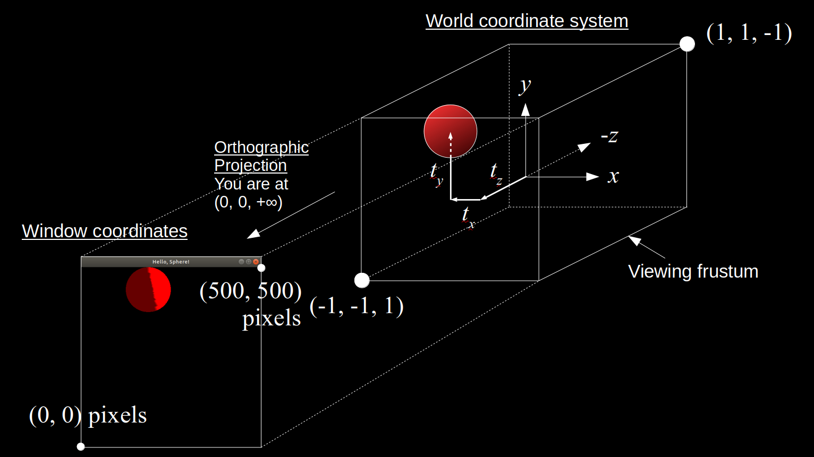
For more details and insights on how OpenGL handles coordinate transformations read these sources:
Now that we understand, in detail, how our 3D world scene maps to our 2D window, we can proceed to implementing animations of physics-based simulations using OpenGL. Note that with our current setup, the 2D location of the center of a sphere in the window on our computer screen accurately shows the location of the sphere's center in the xy-plane in the world coordinate system, since the orthographic projection does not distort this 2D location in any way.
We'll go through a few steps to describe each physics-based simulation in each tutorial:
Like Dr. Adam Bargteil and Dr. Tamar Shinar's course on physics-based animation from SIGGRAPH 2018 and 2019, we begin by considering a very simple object to simulate: a theoretical particle that is infinitely small and has no mass. You can't see it. You can't feel it. It's almost as if it isn't there at all. Oh, but it is there, if we define it to be: an infinitely small dot, moving around in space, or sitting still in space, that defies all of our senses. In a nutshell, a particle, p, is nothing but a vector function xp(t) of time t representing the position of the particle at any given time. We can think of a simulation of a massless, sizeless particle as just us sitting there staring at a sequence of (x, y, z) coordinates changing over a period of time, scrolling by on our computer screens before our eyes. Here is a more formal definition.
Definition. Let T be a closed interval in the set of real numbers, R. Each element of T is called a time or instant of time. A particle, p, is a function xp: T → R3 that assigns to every time t ∈ T a position, xp(t) = (x(t), y(t), z(t)), in 3D space, where x, y, z: T → R are functions representing the coordinates in 3D space of the particle p at each time, t.
We'll refrain from formally defining what a simulation of a massless, sizeless particle is (even though we will basically do it here, but note the details of this "definition" will change as we deal with different systems in this tutorial), but you can think of it simply as a discrete sampling of the position function xp(t) at specific instants in time. That is, if we pick a strictly increasing sequence of times t0, t1, ..., tN from our time interval T, then a simulation stepping through those values of time is just a sequence of positions in 3D space: xp(t0) = (x(t0), y(t0), z(t0)), xp(t1) = (x(t1), y(t1), z(t1)), ..., xp(tN) = (x(tN), y(tN), z(tN)), representing the position of the particle at each of the time instants in the sequence t0, t1, ..., tN. For other systems that are not just a single practically-nonexistent particle, a simulation could be defined in the same way, but the state of the system may not just be a sequence of positions. The state could also include velocities and other values. A simulation could thus generally be defined as a sequence of states, where the state would have to be defined explicitly for any given system we simulate.
Despite a massless, sizeless particle essentially being an invisible object, we will represent such a particle conceptually as a sphere with a nonzero radius so we can, well, actually see it as it moves around on the screen. Yes, the sphere is just a visual aid for us to see where the particle is located in space as it moves. The particle itself, according to our theoretical model here, is infinitely small. We don't really need to assume the particle is infinitely small, but I just do it anyway since we haven't yet defined a particle to be anything other than a point moving around in space over time. It'll make more sense to talk about particle-like objects that have some nonzero size when we start looking at objects interacting with other things in the scene.
Let's start by making a sphere move around the window. The infinitely small point at the center of the sphere will represent a theoretical massless, sizeless particle's position as it moves around the window. Let's make a particle whose x and y coordinates change as a function of time. Let's have the particle's position (i.e., the position of the center of the sphere representing the particle) be at x(t) = (x(t), y(t), 0) where x(t) = 0.5 cos t and y(t) = 0.5 sin t, where t is the amount of time, measured in seconds, that the program has been running. Basically, this will cause the particle to move counterclockwise along a circle of radius 0.5 about the origin of the coordinate system shown above. Here is the code, in a new file called MovingParticle.cpp.
Compile the program:
g++ MovingParticle.cpp -o MovingParticle -L/usr/lib/x86_64-linux-gnu/ -lGL -lglut -lGLU
And run it:
./MovingParticle
Observe the resulting animation. You will see a red sphere moving around the window in a circle! Here is my animation. Ignore the slight jump in the animation as it loops. My animated gif recording program only allows integer amounts of seconds as the duration of the recording, leading to the jump:
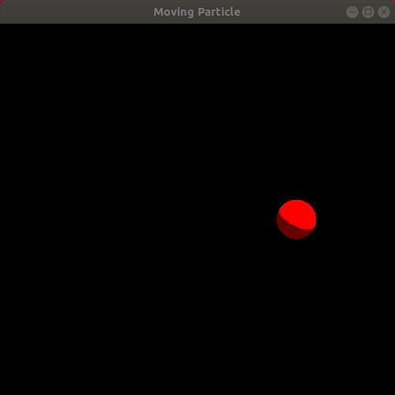
We just completed our first simulation! We specified a way for the particle to move as time passes and then implemented a program that animates a sphere following that movement!
But okay, this doesn't seem very "physics-based," does it? Let's step slightly further into physics by defining a simple concept.
Definition. If a particle's position function x(t) is differentiable with respect to time on an open interval of R that contains T, then the velocity of the particle is the time-derivative, x'(t), of the position function.
To step toward something more physically-driven, let's now imagine our particle is actually floating around in the air, pushed around by a very simplistic mathematical model of wind. Specifically, let's imagine the wind is described by a velocity field, meaning there's a specific wind velocity vector given to us for any given point in space, at any given time instant. In this case, let's imagine our wind velocity vector is defined by the function u(x, t) = u(x, y, z, t) = (u(x, y, z, t), v(x, y, z, t), w(x, y, z, t)), where u(x, y, z, t) = -(x - 0.5 cos (t2) cos t), v(x, y, z, t) = -(y - 0.5 cos (t2) sin t), and w(x, y, z, t) = 0. Following the lead of the Bargteil and Shinar course notes, we will have our particle start at a specified initial position x(t) when t = 0, in this case x(0) = (0, 0, 0), and then keep updating the position of the particle by Forward Euler integration: x(t + Δt) = x(t) + Δt · u(x(t), t). That is, the new position of the particle after stepping forward in time by an amount Δt (the time from one call to RenderScene() to the next) will be the particle's current position plus the time increment amount, Δt, times the velocity vector at the particle's current position at the current time. Note that this time stepping scheme is slightly more sophisticated than the simplest Forward Euler integration scheme, since we let the computer calculate Δt each time it calls RenderScene(), and since the computer may take slightly different amounts of time between each call to RenderScene(), Δt could vary when the program is running. And sorry for mentioning the name of a function from the code in the mathematical modeling section of the text here; I just wanted to clarify how the concept of the time step, also known as the time increment, relates to the code we've seen so far.
Here is the code, in a file I called VelocityParticle.cpp.
Compile:
g++ VelocityParticle.cpp -o VelocityParticle -L/usr/lib/x86_64-linux-gnu/ -lGL -lglut -lGLU
Run:
./VelocityParticle
Observe the resulting animation. It's a rather interesting animation since it looks like something "physics-based" is going on, though it's hard to tell exactly what. Rather than a particle "floating" in the wind, the animation looks more like a particle attached to a few rubber bands being pulled in various directions, eventually oscillating faster and faster as it is pulled toward the center of the window. Here is a looping animation of roughly the first 15 seconds of the animation, minus a little bit at the very beginning:
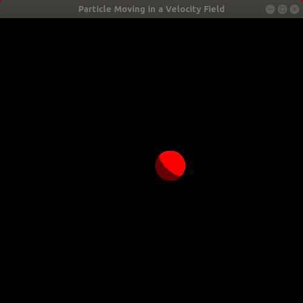
This draws our attention to the fact that it's pretty challenging and unintuitive to try to manually specify velocity fields, even with some cleverly crafted formulas, that actually produce a realistic, physics-based effect that matches our vision for the system we want to model and simulate. As Bargteil and Shinar do in their course notes, we shall now proceed to the next level of physical realism in our mathematical modeling of a particle.
Notice how the code above has the keyword static thrown around in a few places. This is not great programming style or structure! It suggests we're hacking our way through an important responsibility: keeping track of the state of our program, namely, the particle's position and the elapsed time. We need to delegate this responsibility to an object that will stay stored in memory between subsequent calls to RenderScene(). Let's make an improved version of this program in a file called VelocityParticleBetter.cpp.
While we got rid of the use of the static keyword, this code does still have a global ParticleSimulator* variable. To ensure it is used properly, I made a global RenderScene() function that checks that this variable has been initialized. Since GLUT requires that we use some static or global function as the display and idle functions, we have limited simple options for fully encapsulating all of our simulation and rendering into the classes. In this improved solution, we have better defined the jobs the program does by delegating them to different classes: the Particle encapsulates the storing and updating of a particle's position while the ParticleSimulator class does the job of advancing the simulation through time and directing its Particle to update and redraw itself as time elapses.
We will now step into Newtonian mechanics, where we add the concepts of mass, force, and acceleration to create more physically realistic particle simulations.
Definition. A particle with mass is a particle together with a strictly positive real number, m, called its mass.
This defintiion may seem meaningless since we didn't really define what "mass" means. In fact, we won't define mass directly other than that it is a positive real number. We will make it useful though, by describing the governing axioms (assumptions or postulates) of Newtonian mechanics: namely, Newton's Laws of Motion. We will start with just Newton's Second Law. Later we'll add the Third Law. The First Law is actually a theorem that follows directly from the Second Law. Before stating Newton's Second Law, we need to define a concept and then make an assumption.
Definition. A nonempty set of vectors in R3 called forces acting on a particle can be summed to produce a net force acting on the particle.
And now the assumption.
Axiom. The position function of a particle, x(t), is assumed to be twice differentiable with respect to time at all times t in some open interval of R that contains T.
Now we can define the concept of acceleration.
Definition. The acceleration of a particle is the second time derivative of the particle's position. That is, if x(t) is the position of the particle at time t, then the acceleration of the particle at time t is x''(t).
Now that we assumed we can calculate an acceleration for any time value we encounter during a simulation, we can safely state Newton's Second Law.
Axiom (Newton's Second Law of Motion). The net force, f ∈ R3, acting on a particle is equal to the particle's mass, m, times the particle's acceleration. That is, f = mx''(t).
Newton's Second Law is based on a couple of particularly powerful realizations about nature:
Newton's Second Law is the magic that makes physics what it is: it gives us the recipe for dynamics: relating forces acting on objects (kinetics) to motion of those objects (kinematics).
Newton's First Law, while commonly stated as another axiom of Newtonian mechanics, is actually a consequence of the Second Law.
Theorem (Newton's First Law of Motion). A particle with a net force of zero (0 ∈ R3) acting on it maintains a constant velocity at all times.
Proof: Since the net force f acting on the particle is zero, we know by Newton's Second Law that 0 = f = mx''(t). Since we defined the mass of a particle as being strictly positive, mx''(t) = 0 means that x''(t) = 0 for all times t ∈ T. Taking the antiderivative of this equation with respect to time yields x'(t) = C for some constant C ∈ R that doesn't vary with time, for all t ∈ R. Since x'(t) is the velocity of the particle, we have proved that the particle's velocity stays constant with time. This completes the proof. ■
Notably, if the initial velocity of a particle experiencing zero net force was zero, the particle will remain at velocity zero. Otherwise it will continue moving at the same constant velocity at all times. This explains a commonly stated version of Newton's First Law, that a particle at rest will remain at rest and a particle in motion will remain in motion at a constant velocity unless acted on by an outside force (which must result in a net nonzero force acting on the particle).
Here is an implementation of the model described above, in a file I called MassParticleGravity.cpp.